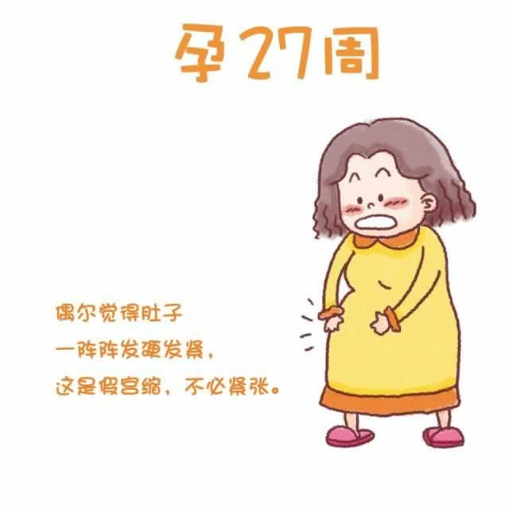

从现在开始你正式进入到孕晚期了。孕晚期的产前检查将更加频繁，每两周甚至每一周要进行一次。此时你的宫高大约为24厘米。此时如果你在比较长的时间里用同一姿势站着或坐着，会感觉到腹部一阵阵地发硬，不用紧张，这是所谓的“假宫缩”。
最近，你的腿部可能会有蠕动、好像蚂蚁爬的感觉，有时还会有刺痛感。久坐时感觉尤为显著，而运动时则会缓解。如果出现上述情况，你可能是得了不安腿综合征。据统计，孕晚期有大约15%的准妈妈会得此症，这虽然不是一种严重的疾病，但会让你觉着不舒服，甚至因此心烦意乱。这种病的病因目前还没有权威的科学解释。可以经常伸展和按摩双腿，注意规律作息，适时补铁都有助于改善症状。